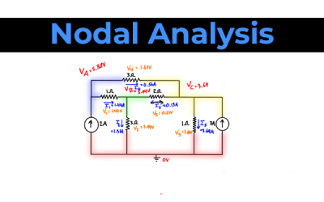

Nodal analysis
Nodal analysis is a method used in electrical engineering to analyze and solve electrical circuits. It is based on Kirchhoff's Current Law (KCL), which states that the total current entering a junction (node) in a circuit is equal to the total current leaving the junction. Nodal analysis is particularly useful for analyzing complex circuits with multiple nodes and branches.
Here's a step-by-step guide on how nodal analysis works:
Identify Nodes:
Nodes are points in the circuit where two or more elements are connected. Assign a voltage variable (usually denoted by
V
x
) to each node. Choose a reference node (ground) and assign it a voltage of 0.
Apply KCL at each Node:
Write Kirchhoff's Current Law equations for each non-reference node. The sum of currents entering a node is equal to the sum of currents leaving the node. Use Ohm's Law (
=
I=
R
V
) to express currents in terms of voltages.
Express Unknown Voltages:
Express unknown voltages in terms of the node voltages. You can use the differences in voltage between nodes to represent the voltage across components.
Write Equations:
Use the KCL equations and the relationships between voltages to write a system of linear equations.
Solve the Equations:
Solve the system of equations to find the node voltages. This can be done using various methods, such as substitution, matrices, or software tools.
Calculate Currents:
Once you have the node voltages, you can calculate currents through the various components using Ohm's Law.
Nodal analysis is particularly effective for circuits with multiple nodes and can simplify the process of analyzing complex circuits. It's widely used in electronic circuit design and analysis. Keep in mind that nodal analysis assumes that currents flow in and out of nodes, and it's applicable to linear circuits (where the relationship between voltage and current is linear, following Ohm's Law).

GO BACK